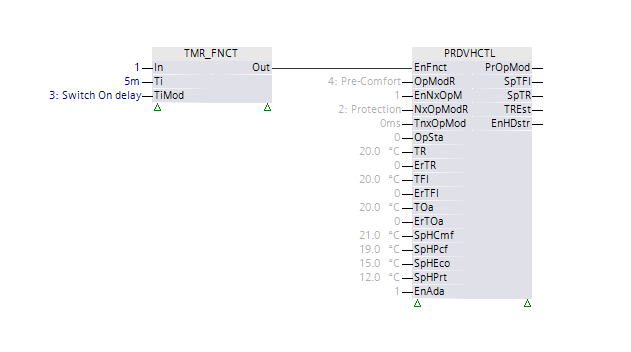

[PRDVHCTL] 预测加热控制器
功能块 PRDVHCTL 计算加热应用的流量温度设定值。
PRDVHCTL 计算加热应用的流动温度设定值。前瞻性、基于模型的自适应控制器使用建筑和传热模型。此外，未来的室温设定点还考虑调度程序和外部气温预测。室外气温预测可以基于 PRDVHCTL 执行的过去室外气温测量值或通过外部源提供给 PRDVHCTL 的值。
- PRDVHCTL can be enabled or disabled via input [EnFnct].
- A constant value via input [OoServ] can replace the flow temperature setpoint.
- Adapting building model parameters can be enabled or disabled via input [EnAda].
- The use of adapted building model parameters can be enabled or disabled via input [TkvAda].
- The adapted building model parameters can be reset via input [ResetAda].
Calculations
PRDVHCTL 借助以下输入值计算最佳流量温度设定点 [SpTFl]、优化的当前操作模式 [PrOpMod] 和启用的热量分布 [EnHDstr]：
- Present room temperature [TR] (optional).
- Present flow temperature [TFl].
- Present outside air temperature [TOa].
- For [EnExtTOa] = 1, the outside air temperature forecast values [ExtTOa0]...[ExtTOa24] are used.
- Present operating mode for room [OpModR] with the associated room temperature setpoint [SpHCmf]/[SpHPcf]/[SpHEco]/[SpHPrt].
- The next operating mode for room [NxOpModR] with the associated room temperature setpoint [SpHCmf]/[SpHPcf]/[SpHEco]/[SpHPrt] and time to next operating mode [TnxOpMod].
- Building model parameters [SpTFlDs], [SpTFlHi], [ExpRad], [TcnBldg], [TcnRoom], [DTRCoef], [WndProp] or their adapted values.
优化每 15 分钟计算一次。 [TiNxOpt] 显示下一次计算的剩余时间。 [OptSta]显示优化状态。
计算包括以下步骤：
工艺步骤 | [OptSta] | ||
|---|---|---|---|
1 | PRDVHCTL 调整建筑模型参数。 | 准备 | |
[EnAda] = 1 [OpSta] = 1 [TRSen] = 1 [ErTR] = 0 [ErTFl] = 0 [ErTOa] = 0 | PRDVHCTL 根据当前测量值 [TR]、[TFl] 和 [TOa] 调整建筑模型参数。 | ||
所有其他情况 | 建筑模型参数未调整。 | ||
2 | PRDVHCTL 更新建筑模型的状态估计。 发布估计室温 [TREst]。 应用的建筑模型参数： | ||
| [阿达斯塔] = 1 | PRDVHCTL 调整建筑模型参数。 | |
| [阿达斯塔] = 0 | PRDVHCTL 使用配置的建筑模型参数。 | |
| 应用的室温值： | ||
| [TRSen] = 1 | 使用测量的室温 [TR] 运行状态估计的计算。 | |
| [TRSen] = 0 | 测量的室温 [TR] 用于状态估计的初始计算（初始化）。 | |
3 | PRDVHCTL 根据调度程序信息计算预测室温设定点 [SpTRPd0]...[SpTRPd21] 的响应。 | ||
| [EnNxOpMod] = 1 | 未来室温设定点响应是在调度程序的 [NxOpModR] 和 [TnxOpMod] 的帮助下计算的。 | |
| [EnNxOpMod] = 0 | 未来室温设定点响应与当前室温设定点 [SpTR] 相同（例如，用于手动干预）。 | |
4 | 该功能块根据过去的外部气温或外部值预测未来的外部气温 [TOaPd0]…[TOaPd20]。 | ||
| [EnExtTOa] = 1 | 该模块根据外部预测值 [ExtTOa0]…[ExtTOa24] 预测未来的外部气温。 | |
| [EnExtTOa] = 0 | 该模块根据过去的外部气温来预测未来的外部气温。 | |
5 | PRDVHCTL 使用温度曲线 [SpTRPd0]...[SpTRPd20]、[TOaPd0]...[TOaPd20]、状态估计值和建筑参数来计算流量温度设定点 [TFlPd0]...[TFlPd20] 的最佳未来曲线以及室温 [TRPrdv0]...[TRPrdv20] 的相关未来曲线。 未来曲线涵盖未来 64 小时。它考虑了周末可能发生的转变。 流动温度最低受估计室温 [TREst] 限制，最高受最高流动温度限制。如果估计室温与 20 °C 的标称室温相匹配，则最大流量温度设定点等于 [SpTFlMax]。一般来说，最大流量温度设定值是 [SpTFlMax] + ([TREst] - 20 °C) 的结果。 PRDVHCTL 在流量温度设定点 [SpTFl] 的输出上提供 [TFlPd0]，作为未来流量温度设定点曲线的第一个元素。 | 优化 | |
6 | PRDVHCTL 根据温度曲线 [SpTRPd0]...[SpTRPd20]、[TOaPd0]...[TOaPd20]、状态估计和建筑模型参数计算启用热分布 [EnHDstr]。 如果未来室温曲线明显偏离相应的室温设定点曲线，则启用热分布 [EnHDstr] 设置为 1。 | 检查启用加热 | |
[OptSta] provides additional information
工艺步骤 | [OptSta] | ||
|---|---|---|---|
| 输出[OptSta]还显示优化计算后的优化结果。 |
| |
| 优化成功 | 建筑模型参数提供给以下输出：[SpTFlDsO]、[SpTFlHiO]、[TcnBldgO]、[TcnRoomO]、[DTRCoefO]。 | 计算 OK |
| 优化不会产生解决方案。 | 计算可能得出结论：（未来）室温设定点并不总是能够达到。在这种情况下，计划最大流量温度设定点为 [SpTFl] = [SpTFlMax]。输出 [TFlPd0]...[TFlPd20] 和 [TRPrdv0]...[TRPrdv20] 不相关。 | 超出范围 |
|
该功能被禁用（[EnFnct] = 0）。 | 完成的 | |
|
该功能已停止服务 ([OoServ] = 1)。 | ||

适用于预测的时间范围 [TRPrdv0]...[ TRPrdv20]、[SpTRPd0]...[SpTRPd20]、[TOaPd0]... [TOaPd20] 和 [TFlPd0]...[ TFlPd20] 在 [TiPrdv0]...[TiPrdv20] 中开始优化后以秒为单位指示。
Enable and disable function
[EnFnct] = 1 | 正常运行 |
[EnFnct] = 0 | 该功能被禁用。 [SpTFl] = Room temperature setpoint [SpHCmf]/[SpHPcf]/[SpHEco]/[SpHPrt] associated to [OpModR]. [EnHDstr] = 1 [PrOpMod] = 禁用 [TRPrdv0]...[ TRPrdv20]、[SpTRPd0]...[SpTRPd20]、[TOaPd0]...[TOaPd20]、[TFlPd0]...[ TFlPd20] 和 [TiPrdv0]...[TiPrdv20] 设置为 0。 |
Set default value
[OoServ] = 1 | 流量温度设定值 [SpTFl] 由默认值 [DefVal] 替换。 [SpTFl] = [DefVal] [EnHDstr] = 1 [PrOpMod] = 命令 [TRPrdv0]...[ TRPrdv20]、[SpTRPd0]...[SpTRPd20]、[TOaPd0]...[TOaPd20]、[TFlPd0]...[ TFlPd20] 和 [TiPrdv0]...[TiPrdv20] 设置为 0。 |
[OoServ] = 0 | 正常运行 |
Use adapted parameters
[TkvAda] = 1 | 使用经过调整的有效建筑参数来计算优化。 |
[TkvAda] = 0 | 使用配置的建筑参数来计算优化。 示例：不需要调整或没有可用的室温传感器（[TRSen] = 否） |
Enable and disable parameter adaptation
[EnAda] = 1 | 建筑模型参数不断调整。 |
[EnAda] = 0 | 建筑模型参数未调整。 |
Reset adapted building model parameter
[重置阿达] = 1 | 重置适应的建筑模型参数。 对于 [EnAda] = 1，在成功的验收测试后，所有后续建筑模型参数都会进行调整和使用，以计算优化。 |
[重置阿达] = 0 | 正常运行 |
Select site for room temperature measurements
室温测量最好在热量需求最高的房间进行，例如房间。朝北的房间几乎没有热量增益。
如果 PRDVHCTL 用于带有散热器的加热应用，恒温阀是可能的并且有意义。重要的是不要在参考房间（即测量室温的房间）中使用恒温阀。在安装位置禁用（完全打开）。加热回路的其余房间可以有恒温阀。
Building model parameter
PRDVHCTL 使用构建模型来计算优化。模型参数 [SpTFlDs]、[SpTFlHi]、[TcnBldg]、[TcnRoom]、[DTRCoef] 和 [WndProp] 配置为常量。可以通过设置 [EnAda] = 1 来调整它们。配置的值仅在初始化阶段的这种情况下相关。
Parameters for nominal heating curve
标称参数heating curve[TOaDsgn]、[SpTFlDs]、[TOaHi]、[SpTFlHi] 和 [ExpRad] 描述了室外空气温度与 20 °C 标称室温设定值的气流温度设定值之间的关系。
- [TOaDsgn], [SpTFlDs]: Design point for the nominal heating curve (defined per the planning data for the heating plant).
- [TOaHi], [SpTFlHi]: High temperature point for the nominal heating curve (defined per the planning data for the heating plant).
- [ExpRad]: Radiator exponent (dependent on the heat output system)
建筑类型 | TcnBldg | TcnRoom | DTRCoef | WndProp | |
|---|---|---|---|---|---|
[h] | [DDDD:HH:MM:SS] | [h] | [K] | [%] | |
轻型结构 | 20 | 0000:20:00:00 | 0.25 – 0.5 | 4.5 | 50 |
中等身材 | 50 | 0002:02:00:00 | 3.5 | 50 | |
重型体型 | 100 | 0004:04:00:00 | 2.5 | 50 | |
桅杆结构，玻璃 | 50 | 0002:02:00:00 | 3.0 | 90 | |
Time constant of building
建筑物的时间常数 [TcnBldg] 表示未供暖建筑物中的室温对外部空气温度变化的反应的延迟。建筑物的时间常数基于建筑物的热质量和建筑物的隔热性能。
相同的设定点可用于典型设计HRA.
Room temperature difference for intermittent heating
以下加热模式可用于确定 [DTRCoef]：
- The heating output system with design heating performance (as defined by the nominal room temperature setpoint of 20 °C and the flow temperature setpoint for design outside air temperature [SpTFlDs]) is switched on for 16 hours.
- The heating output system is completely shut down for 8 hours.
[DTRCoef] 是为此操作设置的室温差（在恒定的外部空气温度和恒定的热增量下）。
设置加热曲线参数和时间常数时，[DTRCoef]无法再根据需要预设。 PRDVHCTL 将 [DTRCoef] 的用户输入限制在预设范围内。
Proportion of windows
窗户比例 [WndProp] 表示窗户的热损失占整个建筑外壳的百分比。窗户比例不是窗户表面积占建筑外壳总面积的百分比。自然通风的热量损失也会增加到窗户的热量损失中。
典型设计可使用与 HRA 相同的设定值。
Automatic adaptation from building model parameters
PRDVHCTL 使用构建模型参数来提高控制精度。建筑模型参数 [SpTFiDs]、[SpTFiHi]、[ExpRad]、[TcnBldg]、[TcnRoom]、[DTRCoef]、[WndProp] 在工程过程中被参数化为常量。
自适应功能自动使建筑模型参数适应实际情况。计算出的、适应的条件被提供给输出[SpTFlDsO]、[SpTFlHiO]、[TcnBldgO]、[TcnRoomO]、[DTRCoefO]。调整后的建筑模型参数将被永久存储。
要持久存储参数，必须在关联的 BACnet 对象上启用扩展“预测加热控制”作为持久性扩展。
持久性扩展具有以下值：
适应时间 | 适应时间是执行适应的时间段。 |
预计参数 | 估计参数是当前调整的建筑参数。 |
估计数组 | 估计的数组识别当前的适应过程。 |
输入 | 描述 | 数据类型 | 默认值 |
|---|---|---|---|
EnFnct | Enable function 启用该功能。 | 布尔值 | 1 |
0 - 该功能被禁用。 | |||
OoServ | Out of service | 布尔值 | 0 |
0 - 正常功能。 | |||
|
DefVal | Default value [ 的默认值SpTFl]，如果 [OoServ] = 1。 | 真实的 | 20.0 [°C] |
OpModR | Operating mode for room 房间当前运行模式 | 整数 | 4: Pre-Comfort 1…9 |
1: Inactive | |||
EnNxOpMod | Enable next operating mode | 布尔值 | 1 |
0 - 预测室温设定点 [SpTRPd0]...[SpTRPd20] 对应于当前室温设定点。 | |||
NxOpModR | Next operating mode for room 调度程序请求的房间的下一个操作模式 | 整数 | 2: Protection 1…9 |
1: Inactive | |||
TnxOpMod | Time to next operating mode 调度程序请求的到下一个操作模式的时间（持续时间）。 | 时间 | 0 |
OpSta | Operating state 供暖回路中循环泵的运行状态。 | 布尔值 | 0 |
TRSen | Room temperature sensor | 布尔值 | 1 |
0 - 计算功能块，无需室温测量（[TR] 仅用于初始化）。 | |||
TR | Room temperature 测量（参考）室温。 | 真实的 | 20.0 [°C] 0.0…50.0 [°C] |
ErTR | Error room temperature 指示室温 [TR] 是否有故障。 | 布尔值 | 0 |
TFl | Flow temperature 测量的流动温度 | 真实的 | 20.0 [°C] 0.0...130.0 [°C] |
ErTFl | Error flow temperature 指示 [TFI] 是否有故障。 | 布尔值 | 0 |
TOa | Outside temperature | 真实的 | 20.0 [°C] -100.0…50.0 [°C] |
ErTOa | Error for outside temperature 指示外部气温 [TOa] 是否有故障。 | 布尔值 | 0 |
EnExtTOa | Enable external outside temperature prediction 使用外部开关打开外部空气温度预报。 | 布尔值 | 0 |
ExtTOa0...ExtTOa24 | External prediction outside air temperature 0... External prediction outside air temperature 24 按小时预测外部室外气温。 Note | 真实的 | 20.0 [°C] -100.0...50.0 [°C] |
SpHCmf | Heating setpoint for comfort “舒适”操作模式的室温设定值。 | 真实的 | 21.0 [°C] 5.0...35.0 [°C] |
SpHPcf | Heating setpoint for pre-comfort “Pre-Comfort”操作模式的室温设定点。 | 真实的 | 19.0 [°C] 5.0...35.0 [°C] |
SpHEco | Heating setpoint for economy “经济”运行模式的室温设定值。 | 真实的 | 15.0 [°C] 5.0...35.0 [°C] |
SpHPrt | Heating setpoint for protection “保护”操作模式的室温设定值。 | 真实的 | 12.0 [°C] 5.0...35.0 [°C] |
SpTFlMax | Maximum flow temperature setpoint | 真实的 | 95.0 [°C] 25.0…130.0 [°C] |
TiStpMax | Maximum stop time 停止阶段的最长时间（持续时间） | 时间 | 1h 0…3小时 |
TOaDsgn | Design outside temperature 根据供热厂规划数据定义 | 真实的 | -11.0 [°C] -50.0…10.0 [°C] |
SpTFlDs | Flow temperature setpoint for design outside temperature 根据供热厂规划数据定义 | 真实的 | 60.0 [°C] 25.0…130.0 [°C] |
TOaHi | Outside temperature high 根据供热厂规划数据定义 | 真实的 | 15.0 [°C] 5.0…25.0 [°C] |
SpTFlHi | Flow temperature setpoint for high outside temperature 根据供热厂规划数据定义 | 真实的 | 30.0 [°C] 20.0…65.0 [°C] |
ExpRad | Radiator exponent 定义加热曲线与直线的偏差 典型供热设备的推荐设置： | 真实的 | 1.3 1.0…1.5 |
TcnBldg | Time constant of building | 时间 | 2天_2小时 0…200小时 |
TcnRoom | Time constant of room 流动温度跃升对室温影响的时间常数 | 时间 | 15m 0…5小时 |
DTRCoef | Room temperature difference coefficient | 真实的 | 5 [deltaK] 0.0...20.0 [deltaK] |
WndProp | Proportion of windows 窗户热损失百分比的参考值。 | 真实的 | 50.0 0.0…100.0 [%] |
EnAda | Enable adaptation | 布尔值 | 1 |
0 - 建筑模型参数未调整。 | |||
TkvAda | Takeover adapted parameters | 布尔值 | 1 |
0 - 不使用调整后的建筑模型参数。 | |||
ResetAda | Reset adaptation 重置调整后的建筑模型参数。 | 布尔值 | 0 |
|
BaObjRef | BA-Object reference | 结构 | --- |
BaObjRef | Device identifier | 双字 | 16#3FFFFF |
BaObjRef | Object identifier | 双字 | 16#3FFFFF |
BaObjRef | Item identifier | 整数 | -1 |
输出 | 描述 | 数据类型 | 默认值 |
|---|---|---|---|
PrOpMod | Present operating mode | 整数 | 1: Inactive 1...6 |
1: Inactive | |||
SpTFl | Flow temperature setpoint | 真实的 | 20.0 [°C] |
SpTR | Room temperature setpoint | 真实的 | 20.0 [°C] |
TREst | Estimated room temperature | 真实的 | 20.0 [°C] |
EnHDstr | Enable heat distribution | 布尔值 | 0 |
0 - 禁用热量分布。 | |||
AdaSta | Adaptation state | 布尔值 | 0 |
0 - 建筑模型参数的适应已关闭或无效。 | |||
OptSta | Optimization state | 整数 | 1: Optimized 1…8 |
1: Optimized | |||
TiNxOpt | Time to next optimization | 时间 | 0 |
SpTFlDsO | Flow temperature setpoint for design outside temperature output 设计外部空气温度的输出气流温度设定值 | 真实的 | 60.0 [°C] |
SpTFlHiO | Flow temperature setpoint for high outside temperature output 室外空气温度高时的输出流温度设定值。 | 真实的 | 30.0 [°C] |
TcnBldgO | Time constant of building output 建筑物时间常数的输出 | 时间 | 2天_2小时 |
TcnRoomO | Time constant of room output 房间时间常数的输出 | 时间 | 15m |
DTRCoefO | Room temperature difference coefficient output 输出为室温不同系数。 | 真实的 | 3 [deltaK] |
TiPrdv | Predictive time points 上次开始优化后的时间跨度（以秒为单位），适用预测 [TFlPrdv]、[TOaPrdv]、[TRPrdv] 和 [SpTRPrdv]。 | 结构 | - |
TiPrdv | 元素0...20 时间值的预测 | 真实的 | 0 |
TFlPrdv | Predictive flow temperature setpoint 流量温度设定值的预测 | 结构 | - |
TFlPrdv | 元素0...20 流动温度设定点的预测 | 真实的 | 0 [°C] |
TOaPrdv | Predictive outside temperature 预报室外气温 | 结构 | - |
TOaPrdv | 元素0...20 室外气温值预测 | 真实的 | 0 [°C] |
TRPrdv | Predictive room temperature 室温预报 | 结构 | - |
TRPrdv | 元素0...20 室温值预测 | 真实的 | 0 [°C] |
SpTRPrdv | Predictive room temperature setpoint 室温设定点预测 | 结构 | - |
SpTRPrdv | 元素0...20 室温设定值预测 | 真实的 | 0 [°C] |
TiPrdv0...TiPrdv20 | Predictive time point 0...Predictive time point 20 对应于 [TiPrdv] 中的各个值。 | 真实的 | 0 |
TFlPd0...TFlPd20 | Predictive flow temperature setpoint 0...Predictive flow temperature setpoint 20 对应于 [TFlPrdv] 中的各个值。 | 真实的 | 20.0 [°C] |
TOaPd0...TOaPd20 | Predictive outside temperature 0...Predictive outside temperature 20 对应于 [TOaPrdv] 中的各个值。 | 真实的 | 20.0 [°C] |
TRPrdv0...TRPrdv20 | Predictive room temperature 0...Predictive room temperature 20 对应于 [TRPrdv] 中的各个值。 | 真实的 | 20.0 [°C] |
SpTRPd0...SpTRPd20 | Predictive room temperature setpoint 0...Predictive room temperature setpoint 20 对应于 [SpTRPrdv] 中的各个值。 | 真实的 | 20.0 [°C] |
Dstb | Disturbed | 布尔值 | 0 |
0 - 成功读取持久值。 | |||
|
SysUnits | System of units 表示system of units由块使用。 | 整数 | 1: International system of units (SI) (fallback) 1...5 |
1: International system of units (SI) (fallback) | |||
ErrCode | Error code indication | 整数 | 0: No error |
= 0 - No error | |||
先决条件：
- [EnAda] = 1
- A (reference) room temperature sensor must be available ([TRSen] = 1).
- A constant flow of heating medium is required in the reference room (the circulating pump is switched on and no thermostatic valves are operating in the reference room).
- No fault on the temperature measurements ([ErTR] = [ErTFl] = [ErTOa] = 0).
适应过程：
- After switching on [EnAda] = 1, the building parameters are adapted to the current conditions during an adaptation period of at least one week. The time frame during which an adaptation is conducted can be read in property 'Adaptation time' of the associated BACnet object.
- The adapted building model parameters are then subjected to an internal block acceptance test. The adaptation states can be viewed on output [AdaSta]. The values as calculated are set to outputs [SpTFlDsO], [SpTFlHiO], [TcnBldgO], [TcnRoomO], [DTRCoefO].
- The adapted building model parameters can then be used to calculate optimization.
[TkvAda] = 1 | 调整后的建筑模型参数用于计算优化。 |
[TkvAda] = 0 | 配置的建筑模型参数计算优化，例如如果控制响应不足以使用调整后的建筑模型参数。 |
[重置阿达] = 1 | 适应过程重新开始，例如如果控制响应不足以使用调整后的建筑模型参数。 |
Enable and disable adaptation
[EnAda] = 1 | 先决条件：
正常运行： | |
[TkvAda] = 1 | 调整后的建筑模型参数用于计算优化。 | |
[TkvAda] = 0 | 配置的建筑模型参数计算优化，例如如果控制响应不足以使用调整后的建筑模型参数。 | |
[EnAda] = 0 | 示例：不需要调整或没有（参考）室温传感器可用（[TRSen] = 否）。 | |
Present operating mode
PRDVHCTL 除了计算出的流量温度设定值外，还提供当前操作模式。
不活跃 | PRDVHCTL 已关闭 ([EnFnct] = 0)。 |
On | 开启循环泵 |
离开 | 关闭循环泵 |
增强加热 | 在入住房间之前加强供暖 |
停止 | 在房间入住结束前关闭循环泵（能源供应） |
命令 | PRDVHCTL 已停止服务 ([OoServ] = 1)。 |
Use estimated room temperature
估计的室温 [TREst] 可用作其他应用的房间模型输出，例如如果没有可用的房间传感器。
Use PRDVHCTL as adaptive heating curve
PRDVHCTL 可与 HCRV 一起用作自适应加热曲线逻辑。
以下输入在 PRDVHCTL 上链接在一起：
- The measured temperatures [TR], [TFl], [TOa] and the corresponding error inputs [ErTR], [ErTFl], [ErTOa].
- The state of the circulating pump [OpSta]
PRDVHCTL 需要以下设置：
- The function is enabled: [EnFnct] = 1 and [OoServ] = 0.
- A room temperature sensor is available: [TRSen] = 1.
- Adaptation is enabled: [EnAda] = 1.
- The adapted building model parameters must be used: [TkvAda] = 1.
加热曲线的适应流量温度设定点链接到 HCRV。
- [SpTFlDsO] is linked to input [SpTFlDs] from HCRV.
- [SpTFlHiO] is linked to input [SpTFlHi] from HCRV.
辐射器指数 [ExpRad] 未调整。使用配置的值。
外部气温 [TOaHi] 和 [TOaDsgn] 的值以及散热器指数 [ExpRad] 必须在 PRDVHCTL 和 HCRV 上设置为相同的值。
Use external outside air temperature forecast
如果建筑工地有外部气温预报，例如气象服务，可以通过输入 [ExtTOa0]...[ExtTOa24] 将预报提供给 PRDVHCTL。如果 [EnExtTOa] = 1，则使用外部预测。如果外部预测不可用或不正确，则可以设置 [EnExtTOa] = 0。 PRDVHCTL 切换到下一次优化的内部预测。
输入 [ExtTOa0]...[ExtTOa24] 以 1 小时为步长生成时间曲线。值 [ExtTOa0] 表示当前的室外气温预测。值 [ExtTOa1] 表示未来一小时的室外气温预测。
在理想预测中，[ExtTOa0] 的值等于 [TOa] 的测量值。 PRDVHCTL 更正预测，因为实际预测并非如此，例如通过气象服务。测量值 [TOa] 用作当前预测，并线性调整下一个预测值。 [ExtTOa0] 和 [TOa] 之间的差异将在预报后的下一小时内得到纠正。如果不需要，请将测量值 [TOa] 链接到 [ExtTOa0]。
在启动期间，PRDVHCTL 使用输入处的当前值进行初始化。如果输入在启动期间没有测量值（例如 BACnet 参考），这可能会产生不良影响。
为了避免这种情况，可以通过 [EnFnct] 将 PRDVHCTL 保持在非活动状态，直到输入接收到测量值。当 PRDVHCTL 处于非活动状态时，它在 [SpTFl] 和 [SpTR] 输出处提供当前加热设定点（由 [OpModR] 选择），[EnHDstr] 和 [PrOpMod] 设置为 1，[TREst] 设置为当前室温 [TR]。
